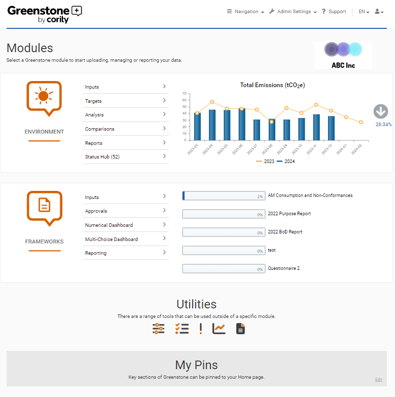

Upon successful login, you will see the following home page. This homepage has useful information and shortcuts that allow you to access the pages you use often quickly. Please note that if you do not have access to all the SPM modules then not all of the sections below will be displayed.

The first two sections detail the Modules you can access. Environment gives you the ability to measure, analyze, and report resource consumption and greenhouse gas emissions at any organizational level. Frameworks supports you in meeting the requirements of a number of recognized reporting frameworks such as GRI, CDP, Sustainable Development Goals (SDGs), UN Global Compact, or any other Frameworks metric relevant to your organization. The Utilities section allows users to manage and make use of Normalization metrics, Actions, Risks, General Reports and Notes & Files.
My Pins contains the pages which you have selected to pin to your home page. This enables quick access to areas of the tool that you use most frequently.